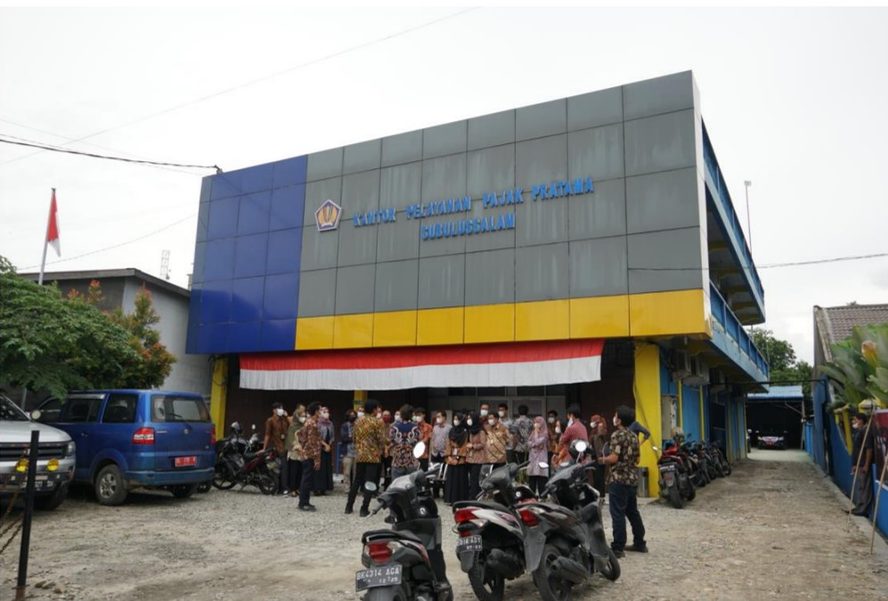

Profil KPP Pratama Subulussalam
Kantor Pelayanan Pajak (KPP) Pratama Subulussalam terbentuk dan mulai beroperasi tahun 2008
berdasarkan Keputusan Direktur Jenderal Pajak Nomor KEP-159/PJ/2008 tanggal 5 September
2008 tentang Penerapan Organisasi, Tata Kerja dan Saat mulai beroperasinya KPP Pratama dan
Kantor Pelayanan, Penyuluhan dan Konsultasi Perpajakan (KP2KP) di Lingkungan Kanwil DJP
Nanggroe Aceh Darussalam.
KPP Pratama Subulussalam berlokasi di Jalan Teuku Umar No.63
Kota Subulussalam, Nangroe Aceh Darussalam.
KPP Pratama Subulussalam memiliki 2 Kantor Pelayanan, Penyuluhan dan Konsultasi Perpajakan (KP2KP) yaitu:
1. KP2KP Aceh Singkil yang berkedudukan di Kabupaten Aceh Singkil; serta
2. KP2KP Kutacane yang berkedudukan di Kabupaten Aceh Tenggara.
Wilayah kerja KPP Pratama Subulussalam meliputi 3 (tiga) kabupaten/kota yaitu :
1. Kota Subulussalam,
2. Kabupaten Aceh Tenggara, dan
3. Kabupaten Aceh Singkil.

Berdasarkan Reformasi Organisasi DJP melalui Perubahan Organisasi dan Tata Kerja
instansi Vertikal Direktorat Jenderal Pajak berdasarkan Peraturan Menteri Keuangan nomor
184/PMK.01/2020 tentang Perubahan atas Peraturan Menteri Keuangan nomor 210/PMK.01/2017
tentang Organisasi dan Tata Kerja Instansi Vertikal Direktorat Jenderal Pajak, struktur organisasi
KPP Pratama Subulussalam terdiri dari 9 seksi/subbag:
1. Subbagian Umum dan Kepatuhan Internal,
2. Seksi Penjamin Kualitas Data,
3. Seksi Pelayanan,
4. Seksi Pemeriksaan, Penilaian, dan Penagihan,
5. Seksi Pengawasan I,
6. Seksi Pengawasan II,
7. Seksi Pengawasan III,
8. Seksi Pengawasan IV, dan
9. Seksi Pengawasan V.